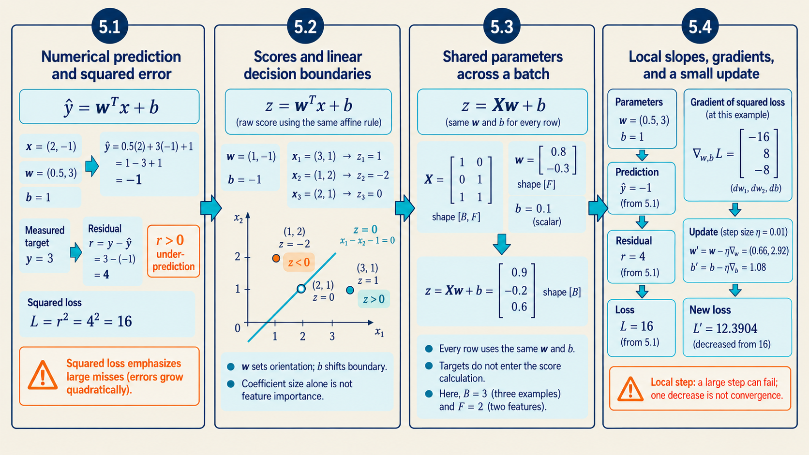
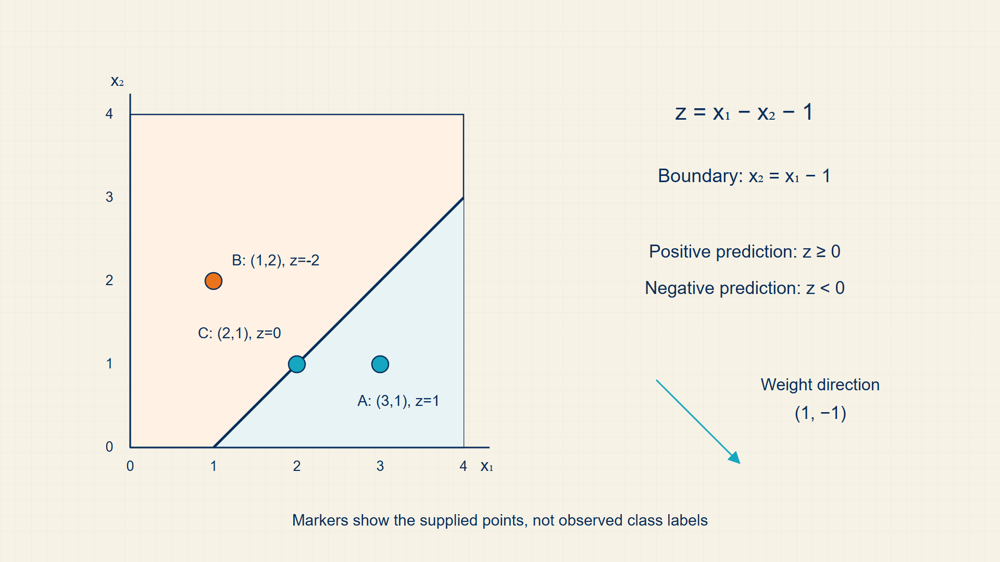
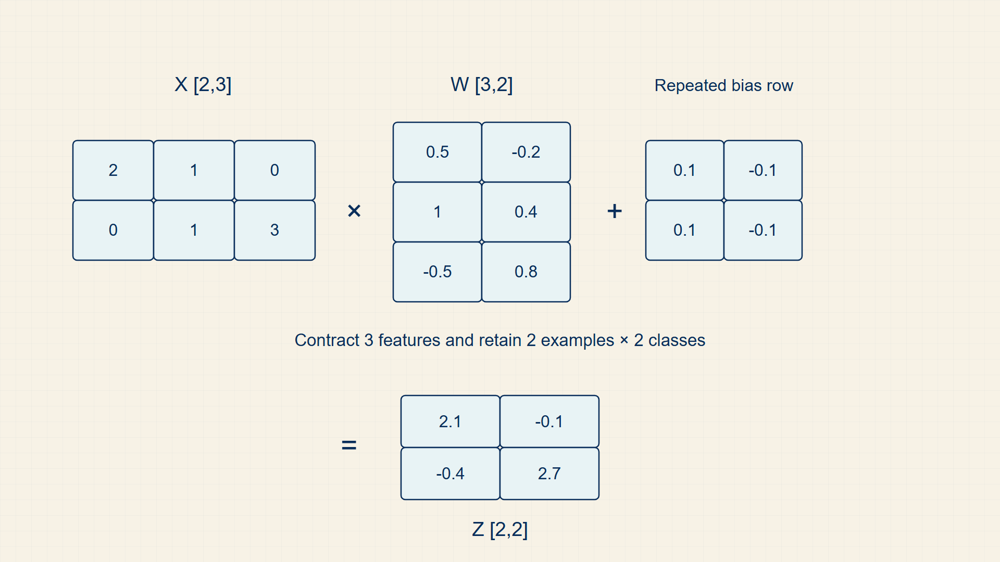

5 Linear models
Weighted feature contributions define predictions and decision boundaries whose local sensitivity guides small parameter changes.
Several input features can contribute to the same prediction. A model must combine their values using a rule that applies consistently to every example. Multiplying each feature by a weight and adding a bias gives one such rule. For regression, its result estimates a measured quantity. For classification, it supplies a score whose sign or size supports a later decision.
The feature-to-score calculation in §4.3 makes each contribution visible. Its geometry also makes a useful starting point for learning: changing a weight changes the prediction, which changes the loss. A local slope will quantify that dependence before probability-based losses are introduced.

The regression, boundary, and batch views share the same weighted sum. The slope calculation in §5.4 adds the information needed to choose a small parameter change.
5.1 Numerical prediction and squared error
A numerical target can depend on several measured properties of an input. Combining those properties requires coefficients that account for their different contributions and units. In linear regression, the weight vector \(w\) contains one adjustable coefficient per feature. The bias \(b\) adds a constant to the prediction independently of the feature values.
For one input vector \(x\) with \(D\) coordinates, the dot product \(w^\top x\) sums the products \(w_jx_j\) over \(j=1,\ldots,D\). Both \(w\) and \(x\) have \(D\) entries. The prediction \(\hat y\) and bias are scalars:
\[ \hat{y}=w^\top x+b \tag{5.1}\]
An affine map is a linear combination plus a constant, as in this expression. The common name linear regression includes the bias. If the target is measured in seconds and a feature in bytes, its coefficient must have units of seconds per byte. The resulting contribution can then be added to the bias in seconds. The model assumes that these contributions add. A useful relationship involving feature interactions may require additional features or a different model.
The residual is the target minus the prediction. For example \(i\), the sign shows which side of the prediction contains the measured value:
\[ r_i=y_i-\hat{y}_i \tag{5.2}\]
A positive residual means the prediction is too low. Squaring it removes the sign and penalizes large misses more strongly. The mean squared error, or MSE, averages these squared residuals over \(n>0\) examples:
\[ L_{\mathrm{MSE}}=\frac{1}{n}\sum_i(y_i-\hat{y}_i)^2 \tag{5.3}\]
Here \(y_i\) is the measured target and \(\hat y_i\) its prediction under the same parameter values. A residual of 4 contributes 16, whereas a residual of 2 contributes 4. Thus doubling an error quadruples its contribution. MSE has squared target units. It is useful when large errors deserve that extra penalty, but an unusually large error can dominate the average.
Example: A numerical prediction and its error
Consider a one-example regression calculation with dimensionless features and target. Let \(x=(2,-1)\), \(w=(0.5,3)\), \(b=1\), and measured target \(y=3\). These fixed parameters give
\(\hat y=0.5(2)+3(-1)+1=1-3+1=-1\).
The residual is \(r=3-(-1)=4\), and its squared error is \(r^2=16\). With one example, the mean is also 16.
Conclusion: The prediction falls four units below this target. Squared error records the size of that miss but discards its direction. The signed residual will remain useful when §5.4 calculates how a parameter change affects the loss.
A real-valued output can also serve a classification task. In that case, its location relative to a decision boundary matters before any probability interpretation is applied.
5.2 Scores and linear decision boundaries
A binary classifier needs to distinguish two classes using the same features for every input. One possible rule chooses the positive class for a positive score and the negative class for a negative score. The affine score is a logit, the unnormalized classification score introduced in §4.3:
\[ z=w^\top x+b \tag{5.4}\]
Here \(x,w\in\mathbb R^D\), \(b\) is a scalar, and \(z\) is one score. Each product \(w_jx_j\) contributes to \(z\). A positive coefficient increases the score as that feature increases with the others fixed. Its magnitude alone does not measure a feature’s contribution on a particular input. For example, coefficients 2 and 0.1 with feature values 1 and 100 contribute 2 and 10, respectively.
Feature units matter as well. Replacing a feature value \(x_j\) by \(100x_j\) and its coefficient by \(w_j/100\) leaves the product unchanged. Coefficients therefore cannot be compared as importance scores without considering scale and coding. Correlated features also allow different weight combinations to explain similar patterns. These associations do not establish causal effects.
A heatmap displays numerical entries as colored cells. Coloring the coefficients \(w_j\) shows the fitted rule across features. Coloring the products \(w_jx_j\) shows their contributions for a particular input. The legend must identify the displayed quantity and color scale. A large coefficient can still make a small contribution when its feature value is close to zero.
The bias has an equivalent feature interpretation. Appending the constant feature \(x_0=1\) and coefficient \(w_0=b\) turns the entire prediction into one dot product. This constant contribution changes the score even when all other feature values are zero.
The decision boundary separates regions assigned different outputs by a decision rule. Under the zero-score rule, it is the following set of inputs:
\[ \{x\mid w^\top x+b=0\} \tag{5.5}\]
For a nonzero weight vector, this set is a line in two dimensions and a plane in three. In \(D\) dimensions, a hyperplane is the set satisfying one nontrivial affine equation, here \(w^\top x+b=0\).
The weight vector is perpendicular to the boundary and determines its orientation. Changing the bias with \(w\) fixed shifts it parallel to itself. If \(w=0\), the score is constant and there is no ordinary separating hyperplane. Chapter 6 connects this zero-score boundary to a classifier that predicts a probability. A different threshold changes the boundary being tested.
Example: Opposite sides of a boundary
With \(w=(1,-1)\) and \(b=-1\), the score is \(z=x_1-x_2-1\). For \(x_A=(3,1)\) it is \(3-1-1=1\), so the zero-score rule selects the positive class. For \(x_B=(1,2)\) it is \(1-2-1=-2\), selecting the negative class. The point \(x_C=(2,1)\) gives \(2-1-1=0\) and lies on the boundary.
Conclusion: One affine expression places all three inputs relative to the same line. The rule needs a tie policy at zero, and correctness still requires target labels. The score signs alone establish only the model’s decisions.
The following figure shows the relationship between feature coordinates and a zero-score separator.

Moving the line changes which fixed input points receive positive scores. Scaling \(w\) and \(b\) together by a positive constant preserves their signs and the boundary. Section 6.4 examines how that scaling changes the probabilities.
5.3 Shared parameters across a batch
Scoring several examples does not require a different weight vector for each one. Stacking feature vectors as matrix rows lets one matrix operation apply the shared parameters to every example. This layout exposes work that numerical libraries can process together, while retaining the separate score belonging to each row.
Specializing the feature-to-score rule from §4.3 to one output, let \(B\) count examples and \(F\) count features. The input matrix \(X\) has shape \([B,F]\), the vector \(w\) has shape \([F]\), and the score vector \(z\) has shape \([B]\):
\[ z=Xw+b \tag{5.6}\]
For row \(i\), the product sums \(X_{ij}w_j\) over the feature index \(j\). The shared feature axis disappears from the result. Adding the scalar bias to every row is broadcasting, the reuse of a value across a compatible array axis. Neither this addition nor the feature sum combines different examples.
Example: The running three-example batch
The inputs are \(X=[[1,0],[0,1],[1,1]]\), with aligned binary targets \(y=[1,0,1]\). At the current parameter version, \(w=[0.8,-0.3]\) and \(b=0.1\).
The first row gives \(1(0.8)+0(-0.3)+0.1=0.9\). The second gives \(0(0.8)+1(-0.3)+0.1=-0.2\). The third gives \(1(0.8)+1(-0.3)+0.1=0.6\). Thus \(z=[0.9,-0.2,0.6]\).
\(X\) has shape \([3,2]\), while \(w\) has shape \([2]\). Both \(z\) and \(y\) have shape \([3]\). Targets are retained for a later loss calculation and are not inputs to this score calculation.
Conclusion: The three scores use one shared parameter version and preserve row order. §6.2 converts them to probabilities. §11.6 uses their matching targets for an averaged loss and update.
The batch arrangement in the figure keeps the same feature axis on each row and on the weights.

For multiple outputs, a mathematical matrix \(W\) with shape \([F,D_{\mathrm{out}}]\) produces \(XW\) with shape \([B,D_{\mathrm{out}}]\). The PyTorch layer nn.Linear stores its weight as \(A\) with shape \([D_{\mathrm{out}},F]\), so that layer calculates \(XA^{\top}+b\), where \(W=A^{\top}\). The stored orientation changes how the operation is written, not the feature-to-output relationship. Actual nn.Linear code appears in §12.3.
The following runnable PyTorch calculation uses explicit multiplication. It creates the three input rows, targets, weights, and scalar bias above. requires_grad=True allows PyTorch to record how later calculations depend on the parameters. This snippet calculates scores without performing a loss, backward pass, or update.
Code example: The running batch from features to logits
import torch
X = torch.tensor([[1.0, 0.0], [0.0, 1.0], [1.0, 1.0]])
y = torch.tensor([1.0, 0.0, 1.0])
w = torch.tensor([0.8, -0.3], requires_grad=True)
b = torch.tensor(0.1, requires_grad=True)
logits = X @ w + b
print(logits) # tensor([ 0.9000, -0.2000, 0.6000])The numeric output is [0.9, -0.2, 0.6], one score per input row. A printed tensor may also display its recorded-operation information. Sharing parameters makes their effect on several predictions visible. To choose a useful change to those parameters, training needs the loss’s local response to such a change.
5.4 Local slopes, gradients, and a small update
A large loss identifies an inaccurate prediction but does not say which parameter to change. The regression example in §5.1 has loss 16 at \(w=(0.5,3)\) and \(b=1\). Its first feature is positive and its second is negative, so increasing the two weights will affect the prediction in opposite directions. A slope measures the change in loss per unit change in a parameter.
First vary only \(w_1\), holding \(x=(2,-1)\), \(y=3\), \(w_2=3\), and \(b=1\) fixed. If \(h\) is the change in \(w_1\), the prediction changes from \(-1\) to \(-1+2h\). The residual becomes \(4-2h\). Expanding its square gives
\[ \begin{aligned}\frac{L(w_1+h)-L(w_1)}{h}&=\frac{(4-2h)^2-16}{h}\\&=-16+4h,\quad h\ne0\end{aligned} \tag{5.7}\]
The finite difference divides the loss change by the nonzero parameter change \(h\). Here it is \(-16+4h\). For \(h=0.001\), the new loss is \(15.984004\), and the quotient is \((15.984004-16)/0.001=-15.996\). Its negative sign says that this positive weight change lowers the loss.
The derivative is the limiting slope as that change approaches zero, when the limit exists. The term \(4h\) tends to zero, leaving \(-16\). Because the loss also depends on other parameters, changing just one while holding the others fixed gives a partial derivative, written \(\partial L/\partial w_1\). The notation identifies both the changing output, \(L\), and the varied input, \(w_1\). It is not a division of two independently chosen values.
The same slope can be obtained by following the calculation through its intermediate values. For a residual \(r\), expansion gives \(((r+h)^2-r^2)/h=2r+h\), so the derivative of \(r^2\) is \(2r\). Changing the prediction by \(h\) changes \(r=y-\hat y\) by \(-h\), giving derivative \(-1\). Changing \(w_j\) changes \(\hat y\) at rate \(x_j\).
The derivative chain rule multiplies local derivatives when one value affects another through a sequence of differentiable operations. It is different from the probability chain rule in §1.2, which factors a joint probability into conditional probabilities. With \(L=r^2\) and \(r=y-\hat y\), the derivative chain rule gives
\[ \begin{aligned}\frac{\partial L}{\partial w_j}&=\frac{dL}{dr}\frac{\partial r}{\partial\hat{y}}\frac{\partial\hat{y}}{\partial w_j}\\&=(2r)(-1)x_j\\&=-2rx_j,\\\frac{\partial L}{\partial b}&=-2r\end{aligned} \tag{5.8}\]
For this one-example squared loss, the derivatives are therefore \(\partial L/\partial w_1=-2(4)(2)=-16\), \(\partial L/\partial w_2=-2(4)(-1)=8\), and \(\partial L/\partial b=-2(4)=-8\). The bias has derivative 1 in the affine prediction because adding \(h\) to it adds \(h\) directly to \(\hat y\). For a mean over several examples, each example contributes its derivative and the same divisor \(n\) averages them.
The gradient collects the partial derivatives in parameter order. If \(\theta=(w_1,w_2,b)\), then \(\nabla_\theta L=(-16,8,-8)\). The symbol \(\nabla\) denotes that collection. Each entry measures sensitivity to one coordinate with the others held fixed. For a small combined change \(\Delta\theta\), the first-order loss change is approximately the dot product \(\nabla_\theta L\cdot\Delta\theta\).
Choosing a change opposite to the gradient makes this approximation negative. A gradient descent step subtracts a positive multiple of the gradient. The learning rate \(\eta\) is that step-size multiplier:
\[ \theta^{\prime}=\theta-\eta\nabla_\theta L,\quad \eta>0 \tag{5.9}\]
The approximate change becomes \(-\eta\sum_j(\partial L/\partial\theta_j)^2\), which is negative for a nonzero gradient. This is a local argument. A sufficiently small positive rate lowers a differentiable loss near such a point, but a large step can pass beyond the region described by the slope. A zero gradient also does not by itself identify a minimum.
Example: Checking one descent step
Using \(\eta=0.01\), the updated weights are \(w'=(0.5,3)-0.01(-16,8)=(0.66,2.92)\). The updated bias is \(b'=1-0.01(-8)=1.08\).
On the same input, \(\hat y'=0.66(2)+2.92(-1)+1.08=-0.52\). Its residual is \(3-(-0.52)=3.52\), so the new squared error is \(3.52^2=12.3904\).
Conclusion: This checked step lowered the one-example loss from 16 to 12.3904. Increasing the first weight and bias and decreasing the second weight all raised this prediction toward its target. The result establishes improvement on this example for this rate, not convergence or performance on new inputs.
The local-slope calculation will support derivatives of probability functions and later losses. A classification score still ranges over all real numbers, however. Chapter 6 connects that score to probabilities before the complete classification update in §11.6.
Chapter checkpoint
In the regression example, why does descent increase \(w_1\) but decrease \(w_2\)? If the feature \(x_1\) were expressed at 100 times its current scale, could its coefficient be compared directly with the old coefficient?
Answer: The prediction is too low. Because \(x_1=2\), increasing \(w_1\) raises it. Because \(x_2=-1\), decreasing \(w_2\) also raises it. The loss derivatives \(-16\) and \(8\) encode those different directions. Rescaling \(x_1\) by 100 requires dividing its coefficient by 100 to preserve the prediction, so raw coefficient size is not an independent measure of contribution.
Does a negative gradient direction guarantee that any step size lowers loss?
Answer: It gives a local first-order decrease when the gradient is nonzero. The finite step must be small enough for that local description to apply. The calculation above checks the chosen rate by recomputing the loss.